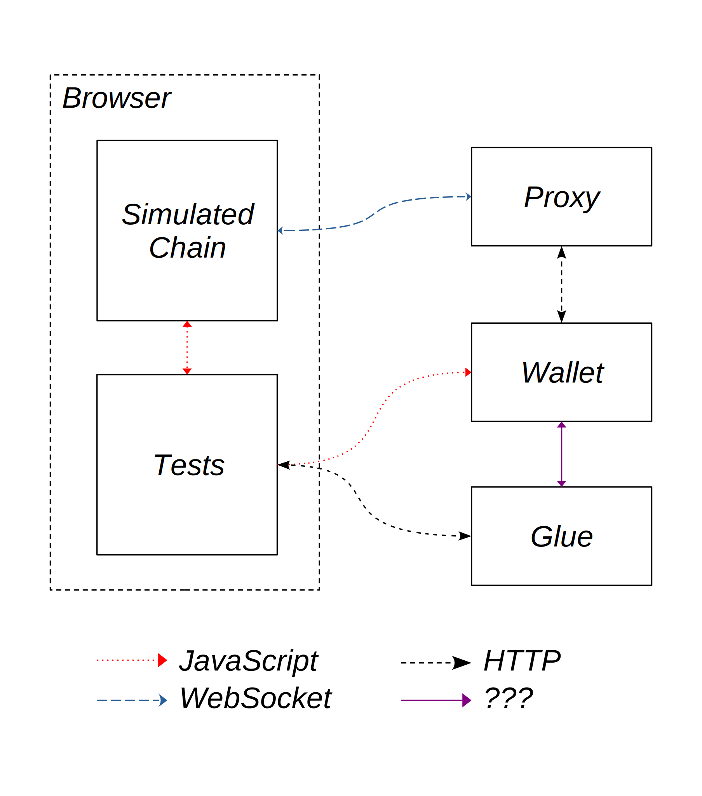

Architecture
Overview

Components
Proxy
A web server that forwards JSON-RPC requests between the wallet and the simulated chain. Necessary because browsers do not allow web pages to listen for HTTP or WebSocket connections
Wallet
The software under test. Communicates with the tests using window.ethereum, and with the simulated chain through the proxy with JSON-RPC.
Simulated Chain
An isolated Ethereum-compatible blockchain (like Ganache.) The simulated chain presents a JSON-RPC interface to the wallet through the proxy.
Tests
Collection of functions that put the simulated chain into a known state, then perform some operation with or retrieve some information through the wallet.
Glue
Software specific to each wallet that translates conceptual actions (eg. approve transaction) into a format that the wallet understands. The framework provides a manual glue that works with all wallets, but requires human interaction. For specific wallets, the framework also provides fully automated glue implementations that can run without a human.